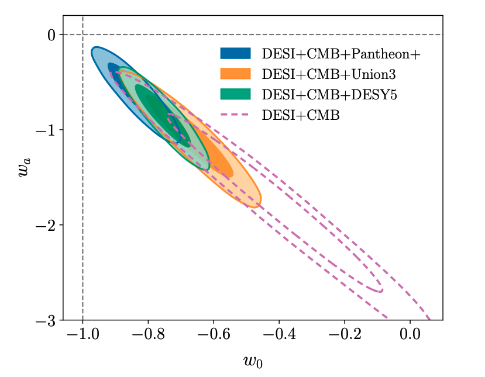

Cosmological Tensions

Figure credit: Phys. Rev. D 112, 083515
Background
Cosmology is in an unusual situation: our standard model, $\Lambda$CDM, fits the data remarkably well, and yet as measurements have become more precise, cracks have started to appear. These "tensions" are disagreements between independent measurements of the same quantity that are too large to be explained by statistical fluctuations alone.
The most famous is the Hubble tension. The Hubble constant $H_0$ tells us how fast the universe is expanding today. We can infer it from the very early universe using the Cosmic Microwave Background (CMB), or measure it directly in the local universe using a chain of distance indicators: Cepheid variable stars, Type Ia supernovae, and others. The two approaches give values of $H_0$ that are discrepant at the $\sim 5\text{–}7\sigma$ level. As both measurements have become more precise over the past decade, the tension has only grown more stubborn, ruling out simple statistical flukes.
A separate and arguably more dramatic tension involves dark energy. In $\Lambda$CDM, dark energy is a cosmological constant (its energy density does not change with time) and it drives the accelerating expansion of the universe. Data from the Dark Energy Spectroscopic Instrument (DESI), combined with CMB and Type Ia supernova measurements, have shown growing evidence that this may not be the case. The data hint at dark energy that evolves with time, often called dynamical dark energy (DDE). If confirmed, this would be one of the most significant discoveries in physics since the original detection of cosmic acceleration in 1998.
My Work
In my work on the expansion history preferences with my advisor, Dragan Huterer, we ask: what specific features in the data are driving the preference for dynamical dark energy? Rather than fitting a DDE model and quoting a significance, we tried to isolate in which redshift range the expansion history needs to be perturbed the most in order to fit the DESI data. We adopted a flexible parameterisation of $H(z)$, allowing the expansion rate to vary freely in redshift bins rather than assuming a specific dark energy equation of state. This makes it possible to read off where the data deviates from $\Lambda$CDM without pre-assuming the shape of the deviation. We found a consistent preference across datasets for a 3–4% increase in the expansion rate at $z \approx 0.7$ relative to the $\Lambda$CDM prediction, driven primarily by DESI's LRG sample. A key part of this work was developing a compressed CMB likelihood to efficiently combine Planck and DESI BAO data (see also the CMB Compression page).
On the Hubble tension side, I investigated whether late-time modifications to the expansion history can simultaneously reconcile the SH0ES and CMB measurement of $H_0$. The conclusion is sobering: achieving a satisfactory fit to the combined Calib. SNIa+BAO+CMB requires a sharp discontinuity in supernova absolute brightness at very low redshift ($z \sim 0.01$). This amounts to effectively decoupling the supernova data from the rest of the calibrators, rather than genuinely resolving the tension. We also identified a somewhat physical modified gravity model which can achieve such a magnitude transition via a scalar field coupled to Ricci Scalar. The upshot is that late-time solutions to the Hubble tension face serious internal consistency challenges when all datasets are considered jointly.